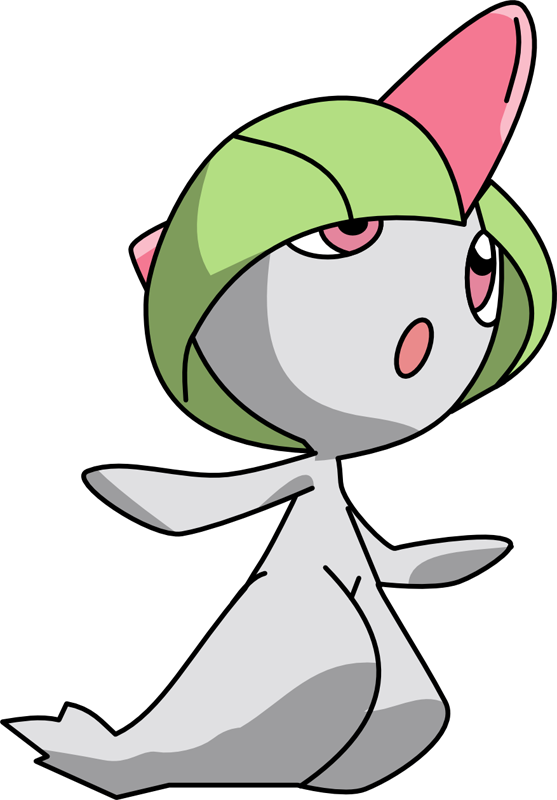
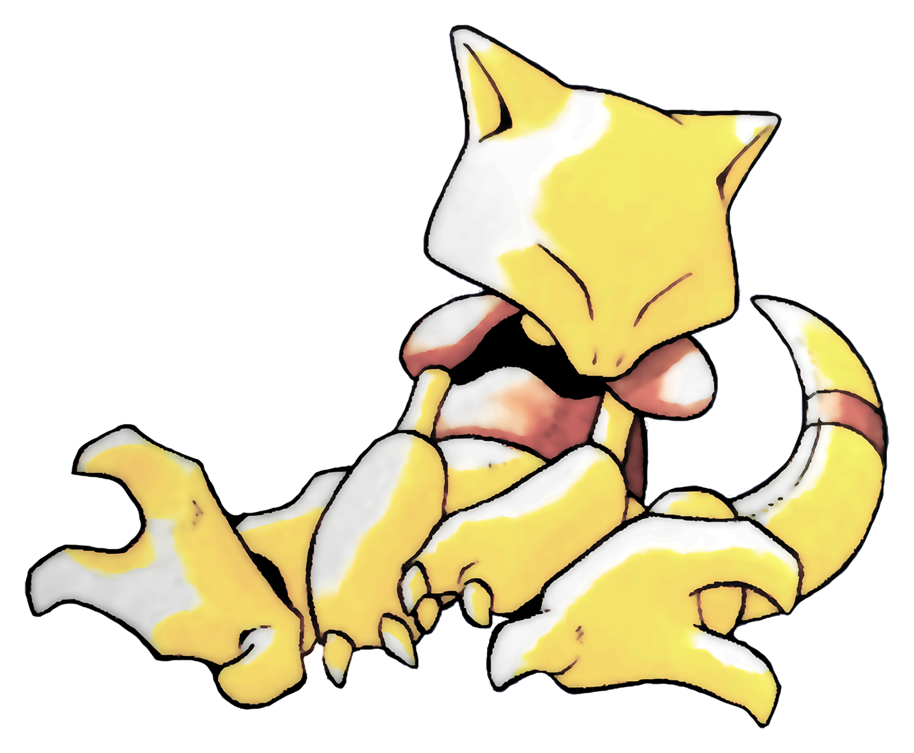
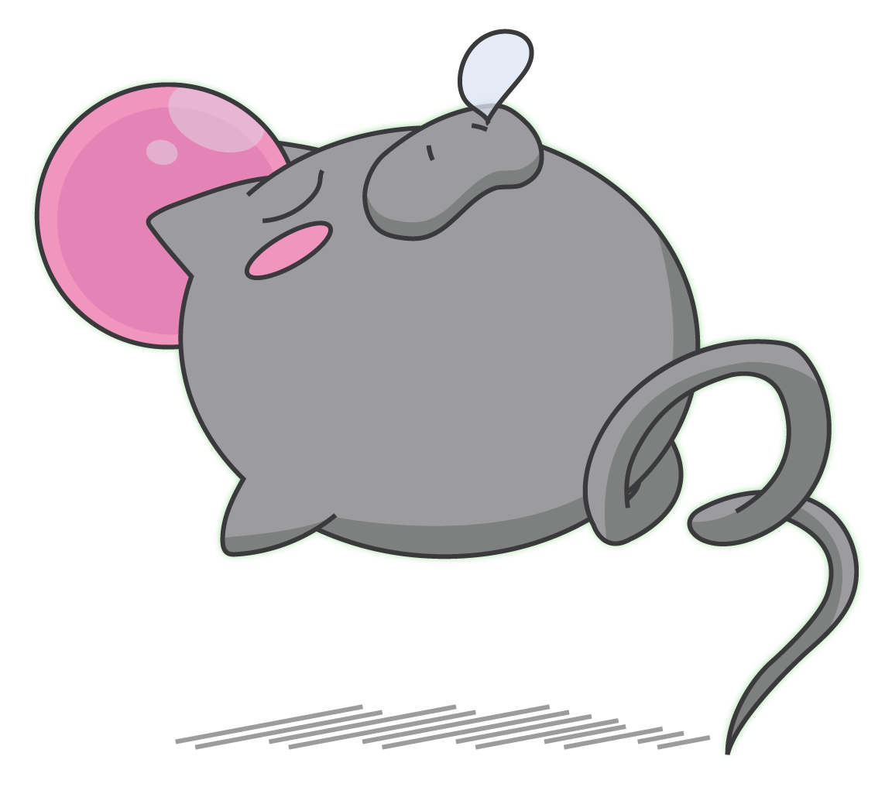
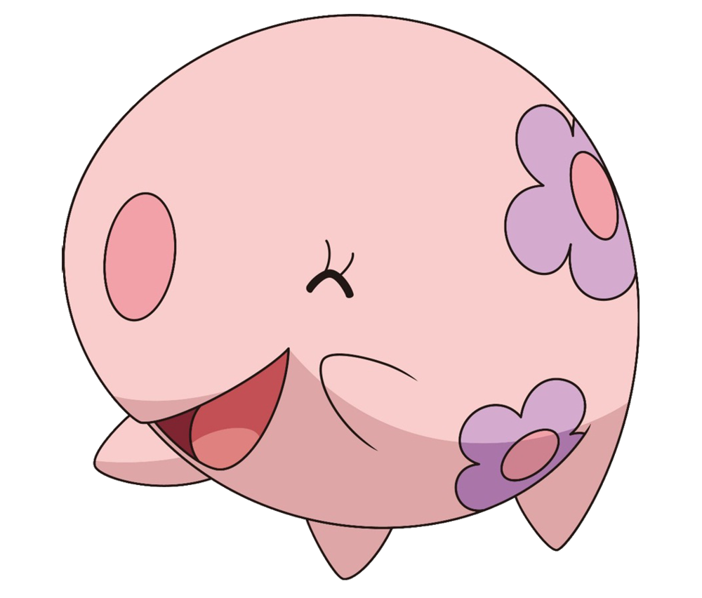

-

Ralts 💖
HP
70
Pequeno e sensível às emoções humanas, Ralts se aproxima de pessoas de bom coração. Seu chifre vermelho na cabeça capta sentimentos ao redor. Ele evolui para Kirlia no nível 20 e pode se tornar Gardevoir ou Gallade.
ATK/ 10DEF/ Vantagem Terrestre -

Abra 💤
HP
40
Um Pokémon do tipo Psíquico conhecido por seu poder telecinético. Abra passa a maior parte do tempo dormindo, mas mesmo inconsciente pode usar Teletransporte para escapar do perigo. Ele evolui para Kadabra no nível 16.
ATK/ 15DEF/ Vantagem Terrestre -

Spoink 🐷
HP
50
Esse Pokémon de aparência suína pula constantemente, pois seu coração só bate enquanto está em movimento. Sua cauda em espiral ajuda na locomoção. Ele evolui para Grumpig no nível 32.
ATK/ 10DEF/ Vantagem Terrestre -

Munna 🌙
HP
70
Um Pokémon que se alimenta de sonhos. Ele flutua silenciosamente e exala névoas coloridas que refletem os sonhos das pessoas e outros Pokémon. Munna evolui para Musharna com uma Pedra da Lua.
ATK/ 10DEF/ Vantagem Terrestre